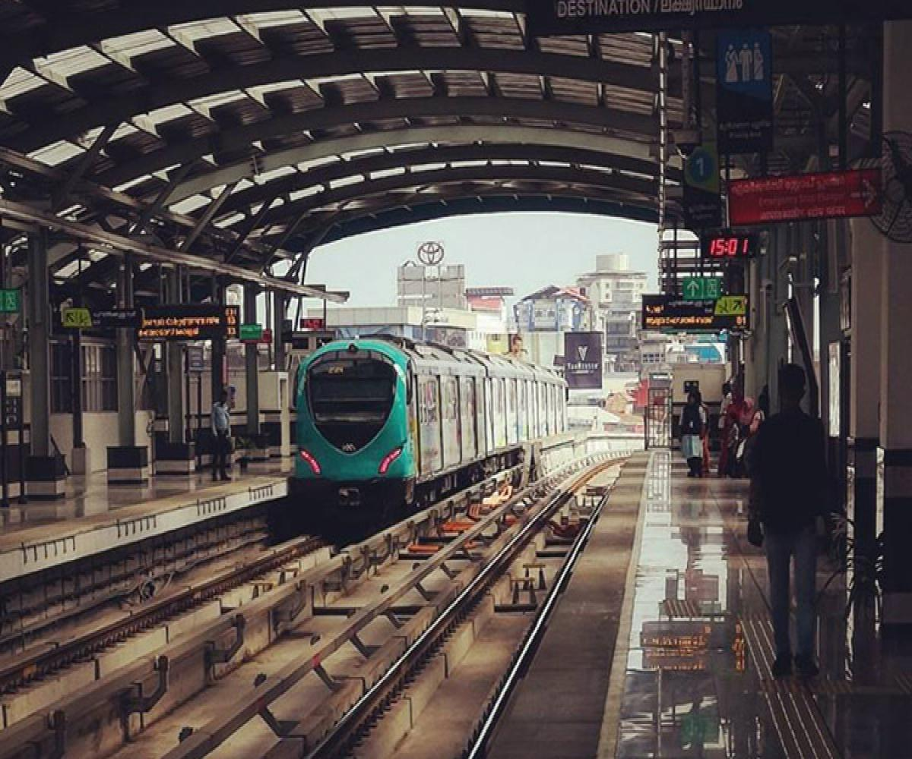

Kochi is a major port city on the Malabar Coast of India bordering the Laccadive Sea, which is a part of the Arabian Sea. It
is part of the district of Ernakulam in the state of Kerala and is commonly referred to as Ernakulam. Kochi is the
most densely populated city in Kerala. As of 2011, it has a corporation limit population of 677,381 within an
area of 94.88 km2 and a total urban population of more than of 2.1 million within an area of 440 km2, making it
the largest and the most populous metropolitan area in Kerala.
Places to visit:
Lulu Shopping Mall, Kerala Kathakali Centre, Cherai Beach, Wonderla Amusement Park, Jew Synagogue and Jew Town, Marine Drive, Mattancherry Palace,
St Francis Church, Santa Cruz Basilica, Bolgatty Palace, Willingdon Island, Fort Kochi